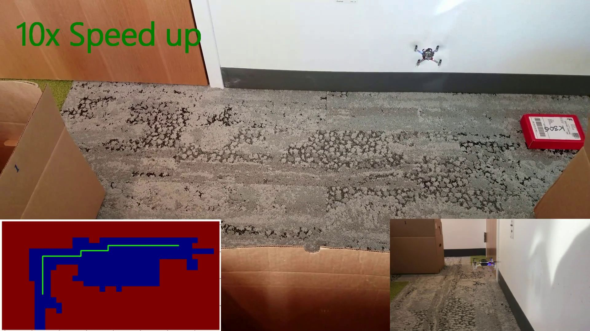

UW Reality Lab
GRAIL (Graphics and Imaging Laboratory)
Paul G. Allen School of Computer Science & Engineering
University of Washington
Email: lowercase_firstname_without_hyphen (*-at-*) cs.washington.edu
Resume Google Scholar
About Me
I will join Google Research as a Research Scientist this summer. Previously, I was a PhD student of computer science at University of Washington, where I enjoyed my times with Brian Curless and Ira Kemelmacher-Shlizerman.
I was formerly a principal engineer in CyberLink and received my bachelor's and master's degree from National Taiwan University advised by Ja-Ling Wu.
My research interests broadly cover 3D vision, neural rendering, and computational photography, with expertise on human modeling.
I love pixels and believe the power of simple intuition and creative thinking.
Work Experience
| I was wandering at Google in 2019 summer, where I found lots of fun in the Augmented Perception group led by Shahram Izadi. With Rohit Pandey, Christian Hane, Sofien Bouaziz, and Sean Fanello, we delved into the world of 3D neural rendering: the good, the bad, and the beauty. |

|
| Summer 2018 was an amazing experience for me at Facebook Seattle as a research intern. I have the privilege of collaborating with the computational photography team led by Michael Cohen. We worked to find innovative solutions for neural rendering and modeling human bodies. | |
| CyberLink is a worldwide multimedia editing and playback software company in Taiwan. During the period, I served as Tech Lead and was fortunate to work with a group of talents, developing 13 image/video technologies and filing 9 granted patents for consumer products. |
Research

|
| PersonNeRF: Personalized Reconstruction from Photo Collections |
| Chung-Yi Weng, Pratul P. Srinivasan, Brian Curless, Ira Kemelmacher-Shlizerman |
| CVPR, 2023 |
|
We present PersonNeRF, a method that takes a collection of photos of a subject
captured with arbitrary viewpoints, body poses and appearances, and builds a personalized space that enables rendering the
subject in an intuitive way with novel combinations of these attributes.
Above we rebuild Roger Federer's personalized space from his photos across more than 10 years. |
| project page | paper | video |

|
| HumanNeRF: Free-viewpoint Rendering of Moving People from Monocular Video |
| Chung-Yi Weng, Brian Curless, Pratul P. Srinivasan, Jonathan T. Barron, Ira Kemelmacher-Shlizerman |
| CVPR, 2022 (Oral Presentation) |
| We introduce a free-viewpoint rendering method -- HumanNeRF -- that works on a given monocular video of a human performing complex body motions, e.g. a video from YouTube. Our method enables pausing the video at any frame and rendering the subject from arbitrary new camera viewpoints or even a full 360-degree camera path for that particular frame and body pose. |
| project page | paper | video | code |
 |
| Vid2Actor: Free-viewpoint Animatable Person Synthesis from Video in the Wild |
| Chung-Yi Weng, Brian Curless, Ira Kemelmacher-Shlizerman |
| arXiv, 2020 |
|
Given an "in-the-wild" video, we train a deep network with the video frames to produce an animatable human representation that can be rendered from any camera view in any body pose, enabling applications such as motion re-targeting and bullet-time rendering without the need for rigged 3D meshes.
Here we rebuild a 3D animatable Roger Federer from a video of 2015 US Open Final. Please check out the dynamic versions of the results on the project page. |
| project page | paper | video |
 |
| Photo Wake-Up: 3D Character Animation from a Single Photo |
| Chung-Yi Weng, Brian Curless, Ira Kemelmacher-Shlizerman |
| CVPR, 2019 |
| Given a single photo as input (far left), we create a 3D animatable version of the subject, which can now walk towards the viewer (middle). The 3D result can be experienced in augmented reality (right); in the result above the user has virtually hung the artwork with a HoloLens headset and can watch the character run out of the painting from different views. Please get details and dynamic versions of the results on the project page. |
| project page | paper | video | MIT Tech Review |
 |
| RoleNet: Movie Analysis from the Perspective of Social Networks |
| Chung-Yi Weng, Wei-Ta Chu, Ja-Ling Wu |
| IEEE Transactions on Multimedia 2009 |
| Inspired by idea of social network analysis, we propose a novel way to analyze movie videos from the perspective of social networks. The relationship between characters in a movie is elaborately described as a network, called RoleNet. Based on RoletNet, further network analysis is performed to extract semantic information in the movie, including leading roles, macro/micro community structures, and hidden story lines and story units. |
| paper |
 |
| Tiling Slideshow |
| Jun-Cheng Chen, Wei-Ta Chu, Jin-Hau Kuo, Chung-Yi Weng, Ja-Ling Wu |
| ACM Multimedia 2006 (Best Paper Award) |
| Tiling Slideshow is a brave new photo displaying method to arrange photos in a tile-like manner, coordinating with the pace of background music. Photo clustering is applied based on the relationship between photos; music beat detection is perfomed in order to trigger the progress of slideshow; photo importance is computed to help ROI determination. Finally, the layout organization is formulated as a constrianed optimization problem to make sure the most satisfied composition results could be produced. |
| project page | paper |
Project


|
| MoonRiver: Deep Neural Network in C++ |
| Chung-Yi Weng |
|
MoonRiver is a deep neural network framework built from scratch using C++. Our goal is to shed light on the complex inner working flow of network learning. We have designed MoonRiver to be (1) lightweight: no third-party dependencies, easy to compile with any standard C++ compiler; (2) scalable: effortlessly designing and learning large networks with minimal fuss. We demonstrate the effectiveness of MoonRiver by training and testing auto-encoder and LeNet. The codes used to implement these networks are concise and the experimental results are promising. |
| poster | report |
 |
| Becoming Brad Pitt |
| Chung-Yi Weng, Xuan Luo |
| Final Project, Computer Vision (UW CSE576) |
| In this project, we designed a face reenactment system that enables users to control another person's (e.g Brad Pitt) head motions and facial expressions. Our system involves implementing a high-speed tracking module, a puppetry module to control facial expression and a morphig module to enforce smooth transition when switching inbween different identities. Experiments show that our system can reenact head motions and facial expressions of a target person in real time. |
| report | video |
 |
| Hyperlapse Video Creation |
| Chung-Yi Weng, Xin Yang |
| Final Project, Computer Graphics (UW CSE557) |
| The project aims to create a hyperlapse video in real-time. To this end, we describe the input video as a graph where the nodes represent frames and the edges are cost functions that penalize undesired frame transitions. A heyperlapse video with a given target speed can be generated by finding an optimal path in the graph. |
| project page |
|  |
| Local Collision Avoidance for a Nano-drone |
| Melanie Anderson, Chung-Yi Weng, Bindita Chaudhuri |
| Final Project, Robotics (UW CSE571) |
| In this project, we have come up with a system that lets a nano-drone navigate an indoor space filled with static and moving objects. We do this by creating a map of the environment using raw laser data, represented as an occupancy grid. To find the best route to the goal, we use A* search. If any moving objects get in the way during navigation, we update the map and come up with a new obstacle-free path. |
| report video |
Industry Product
 |
| Magic Selection |
| Industry Product @ CyberLink |
| Magic Selection assists users in selecting objects on an image by predicting object boundaries based on user-drawn foreground/background strokes. |
 |
| Smart Lasso |
| Industry Product @ CyberLink |
| Smart Lasso adjusts a user-drawn boundary to fit the true object boundary, providing an alternative approach for labeling objects. |
 |
| Soft Matting |
| Industry Product @ CyberLink |
| Soft Matting predicts opacity values on user-labeled regions, applying image matting in an interactive manner. Matting technique is helpful for refining boundary of objects such as fur or hairs. |
 |
| Perfect Group Shot |
| Industry Product @ CyberLink |
| By capturing several photos in a short period, Perfect Group Shot creates a group photo by seamlessly compositing human subjects with the best facial expressions (e.g. smiling without eye blinking) from different images. |
 |
| Sequence Shot |
| Industry Product @ CyberLink |
| Sequence Shot creates a time-lapse effect in a single image by detecting and combining moving subjects from multiple photos. |
 |
| Panorama |
| Industry Product @ CyberLink |
| Panorama is an image stiching technique for creating a wide-angle view photo from multiple images. Our system allows for taking as input out-of-order images and is robust to panning, zooming, and moving objects. |
 |
| Holmes ‐ (Object Tracking by Rectangle or Point) |
| Industry Product @ CyberLink |
| Holmes tracks objects in a video given a point or a rectangle as input. The tracked point or rectangle are used for video editing tasks such as adding a dialog box on top of an object. |
 |
| Cupid ‐ (Object Tracking by Object Boundary) |
| Industry Product @ CyberLink |
| Cupid tracks an object as well as its region in a video, taken as input a user-labeled object mask at the first frame. The generated object masks are used for downstream video editing such as applying filters on the labeled object. |
 |
| Robust Face Detection |
| Industry Product @ CyberLink |
| Building upon sparse and high-dimension features, we train a face detector with a hierarchical architecture that performs swift detection and is robust to in-plane and out-of-plane rotations. |
 |
| Facial Landmark Localization |
| Industry Product @ CyberLink |
| We train a facial landmark detector in an iterative optimization process by selecting the most discriminative feature in each iteration. The detection is real-time and robust to occlusions and hard shadows. Building upon the technique, CyberLink starts a startup, Perfect Corp., that focuses on virtual makeup and goes public on the NYSE in 2022 |
 |
| Face Login |
| Industry Product @ CyberLink |
| Face Login takes as input video frames from an RGB webcam and recognizes human faces to determine authorized users. The system adopts online learning approach to update face models, hence robust to different light conditions. |
 |
| FaceME ‐ (Face Clustering/Recognition in Photos/Videos) |
| Industry Product @ CyberLink |
| FaceME recognizes and clusters faces in photos and videos with similar appearances, assisting users to effectively tag faces and organize personal datasets. |
 |
| Chaplin ‐ (Hand Tracking Based Button Control System) |
| Industry Product @ CyberLink |
| Chaplin tracks your hand movements to control the buttons displayed on the screen. Just wave your hand to activate the system, and it follows your hand's every move. All it takes is a webcam to provide the RGB frames as input. |
Patents
| Patent No. | Country | Title |
|---|---|---|
| US 8,121,358 | US | C.-Y. Weng, W.-T. Tsai, and C.-M. Lee, "Method of Grouping Images by Faces" |
| US 8,531,478 | US | C.-M. Lee, C.-Y. Weng, "Method of Browsing Photos based on People" |
| US 8,649,602 | US | S.-M. Tang, C.-Y. Weng, and J.-H. Huang, "Systems and Methods for Tagging Photos" |
| US 8,693,739 | US | C.-Y. Weng, S.-M. Tang, and H.-C. Huang , "Systems and Methods for Performing Facial Detection" |
| US 8,761,519 | US | M.-H. Chang, C.-Y. Weng, "System and method for Selecting an Object Boundary in an Image" |
| US 8,769,409 | US | C.-Y. Weng, H.-C. Huang , "Systems and Methods for Improving Object Detection" |
| US 8,867,789 | US | H.-W. Hsiao, C.-Y. Weng, "Systems and Methods for Tracking an Object in a Video" |
| US 9,336,583 | US | H.-C. Huang, H.-W. Hsiao, C.-Y. Weng, and C.-D. Chung, "Systems and Methods for Image Editing " |
| JP 4,925,370 | JP | C.-Y. Weng, W.-T. Tsai, and C.-M. Lee, "Method of Grouping Images by Faces" |